TECHVESTVENTURES DAILY RISK ALERTS — Emergent News Digest — Nov 24, 2026, 12:00 PM EST ALL RISK REPORTS click TVV Risk Center
TVV RESEARCH DIGEST — November 24, 2026 — 13 desks
Prioritized Risk Summary November 24, 2026
| Sections Ranked for Importance Today | |
|---|---|
| STOCKS | Huang rally fades: Nvidia -7.7%, Nasdaq -1.8% and its 2026 gain down to 1.7% |
| TECHNOLOGY | Anthropic falls below its $83 IPO price on day 4; bettors see 87.5% close below |
| DERIVATIVES | Margin debt $1.45T, +22% in a year; ING's $500M data-center loan auction fizzles |
| INFRASTRUCT | Amazon carries $296B of debt and leases for the AI build-out; Thanksgiving storm |
| ECONOMY | Kalshi sees 86% odds of hot core PCE Wednesday; 95% odds of a December Fed hike |
| PREDICTIONS | Kalshi sees Q4 growth near 2.8% before Wednesday's GDP revision |
| GEOPOLITICS | Iran claims mines hit 3 escorted tankers; UKMTO logs projectiles; Russia warns Estonia |
| TERROR | FSB says it foiled a synagogue bomb plot; ransomware on pace for a record month |
| COMMODITY | Copper -4.5% with the AI trade; bettors give 61.5% odds gold falls below $3,500 |
| AI BOOST | One in four US firms uses AI; Allstate reported cutting 5,000 jobs in AI push |
| HEALTH | WHO confirms first H5N1 death from dairy cattle exposure; no human-to-human spread |
| SPACE | NOAA flags G1 storm days on Nov 27 and Dec 4; solar wind calm today |
| QUAKES | No deadly M6+ quake; five M6+ in seven days, led by M6.8 Timor-Leste |
1. Major Geopolitical Conflict Developments
- ★ Hormuz mine claims versus the shipping record: Iran's IRGC Navy says three tankers it called "violating" vessels struck naval mines and caught fire in the Strait of Hormuz on Monday, two of them under US air cover and escort, and warns that only Tehran's approved northern lane is safe. UKMTO instead logged three vessels struck by unidentified projectiles Monday evening, all continuing their transit with crews accounted for; US Central Command has called earlier IRGC mine claims false. These are conflicting wartime claims and none of the mine reports is independently confirmed. The US added a third carrier, USS Theodore Roosevelt, to the blockade force last week (CNBC). CNBC · ABC News · Iran International
- ★ Financial squeeze on Tehran: Treasury sanctioned more than two dozen Iranian exchange houses, front companies and officials, plus the Iran Center for Exchange of Currency and Gold, which Treasury says serves tens of billions of dollars of trade a year. Secretary Scott Bessent called Iran's economy "underwater" and its shadow banking system "the last financial lifeline of a bankrupt regime." FinCEN found 4,983 suspicious transactions of $500,000 or more from January 2025 to August 2026, with UAE recipients taking $7.6 billion, 52% of the total. Polymarket gives only 15.5% odds that the US reissues Iran oil-sale sanction relief by Dec 31, down from 49% 30 days ago (see graph); near term, bettors expect the squeeze to continue, not a deal. Iran International · Polymarket
- ★ Russia warns Estonia of "open war": Russia's Foreign Ministry protested to Estonia's charge d'affaires over Tallinn's plan to close all five road crossings (Narva-1, Narva-2, Koidula, Luhamaa, Saatse) from Dec 1 for at least six months, saying such actions are "on the verge of unleashing open war" and accusing Estonia of letting Ukrainian drones use its airspace and of a naval blockade. Estonian Foreign Minister Margus Tsahkna rejected the claims, citing a foiled arson attack on a defense company that Estonia says Russian military intelligence ordered. Zelenskyy has confirmed that Ukraine hit a Russian ship in the Gulf of Finland (Bloomberg). CNBC · UPI · Bloomberg
- ★ Russia's war toll: Ukraine's General Staff claims Russian personnel losses hit a war record of 54,200 in October and 53,319 so far in November (about 2,222 a day), on pace for about 66,600, with a cumulative claim of 1.64 million (see graph; these are Kyiv's claims, not independently verified). CNN reports new data suggesting about 720,000 Russian soldiers killed since the start of the war, one every four minutes. Near term, the November pace points to a new monthly record if it holds. Ukraine Ministry of Defence · CNN
- Taiwan election pressure: researchers say fake personas aligned with China are targeting Taiwan's elections (New York Times), and Taiwan's Mainland Affairs Council chief warns of tougher Chinese pressure under Xi's fourth term (Focus Taiwan). New York Times · Focus Taiwan
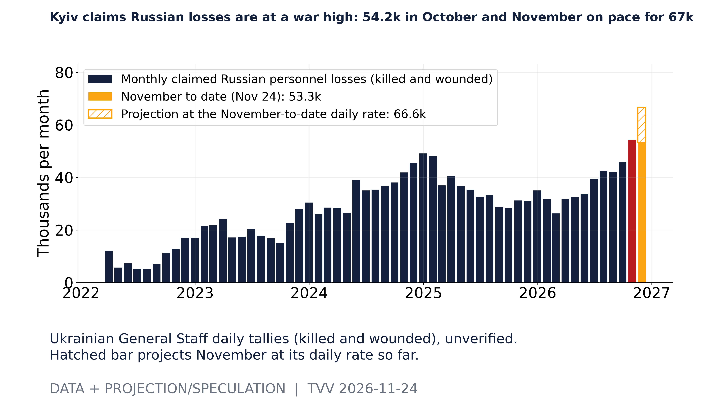
Kyiv claims Russian losses are at a war high: 54.2k in October and November on pace for 67k. Ukrainian General Staff daily tallies (killed and wounded), unverified. Hatched bar projects November at its daily rate so far. [Data + Projection/Speculation; data as of 2026-11-24] Source: russianwarship.rip data page
2. Major Terror / Security Incidents
- ★ Synagogue bomb plot foiled in Russia: the FSB says it detained a Russian citizen born in 2004 who was heading to a synagogue in Kislovodsk, Stavropol Region, with a 3.5 kg improvised explosive device, after scouting peak attendance times on instructions from a banned international terrorist organization (TASS; Jerusalem Post). The FSB account is not independently verified. TASS · Jerusalem Post
- ★ AI-assisted breach of the EU executive: the European Commission confirmed that names and email addresses of external users were stolen from its EU Academy platform in an AI-assisted cyber campaign first detected Oct 22; the scale is still under investigation, there is no attribution yet, and public access is disabled. Researchers have linked the AI penetration framework ARTEX to large espionage campaigns (The Register; AP). The Register · AP
- ★ Cyberattacks on tankers: US officials see Iran as a possible culprit in dozens of new cyberattacks on ships, with as many as 50 vessels carrying oil, LPG and chemicals targeted, some receiving bomb threats and ransom messages; Russia is also being examined (WSJ via CNBC). WSJ · CNBC
- ★ Ransomware at a record pace: leak sites list 1,146 victims so far in November, on pace for about 1,471, above August's record 1,212 and double November 2025's 740; the most active groups in 30 days are N0n (260), thegentlemen (120) and Qilin (101), and 41% of named victims are in the US (ransomware.live; see graph). New victims this week include UK wealth manager St. James's Place (Citywire) and a suspected attack on the city of El Cajon, California (NBC 7 San Diego). Near term, November is set to be the worst month on record. ransomware.live · Citywire · NBC 7 San Diego
- Infrastructure probe: an attempted cyberattack on a dam in Algonquin, Illinois, has raised concerns about infrastructure security (ABC7 Chicago). ABC7 Chicago
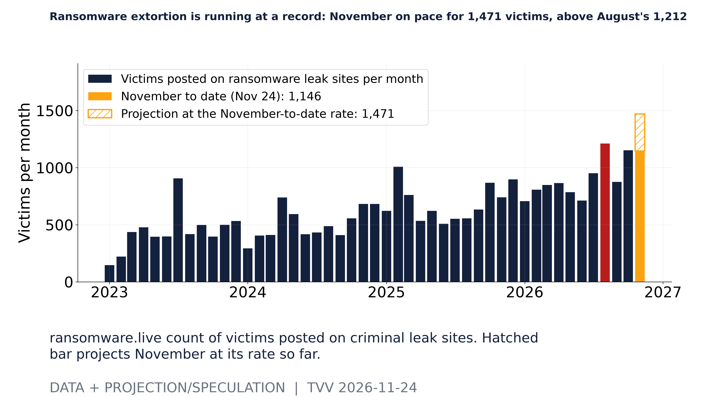
Ransomware extortion is running at a record: November on pace for 1,471 victims, above August's 1,212. ransomware.live count of victims posted on criminal leak sites. Hatched bar projects November at its rate so far. [Data + Projection/Speculation; data as of 2026-11-24 09:58 ET] Source: ransomware.live data page
3. Earthquakes and Eruptions
- ★ No M6+ quake with significant casualties or damage in the past day. The week was busy at depth: USGS lists 103 M4.5+ events, 41 M5+ and 5 M6+ in seven days, led by an M6.8 105 km NE of Lospalos, Timor-Leste, on Nov 21 at 132 km depth, with the Mauritius-Reunion region joining Peru, Timor-Leste and Vanuatu on the M6+ list (see graph). USGS
- ★ What bettors expect for the rest of 2026: with 37 days left and a 2026 high of M7.8, Polymarket puts 78% on the year's biggest quake staying at M7.9 or below (73.5% 30 days ago), against 45% of years since 1950, and still gives an M9.0+ 5.9% (see graph). Near term, the market sees a quiet finish to the year at the top end. Polymarket · USGS
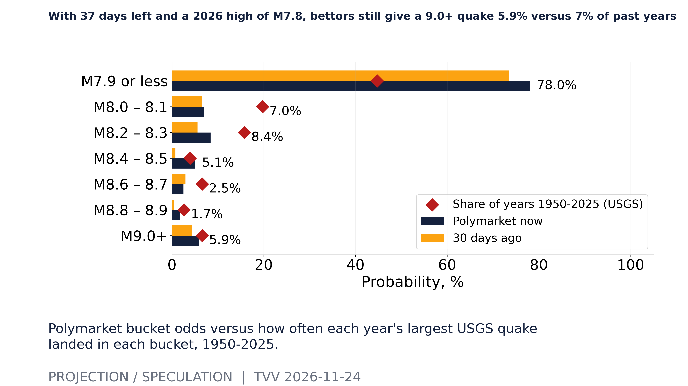
With 37 days left and a 2026 high of M7.8, bettors still give a 9.0+ quake 5.9% versus 7% of past years. Polymarket bucket odds versus how often each year's largest USGS quake landed in each bucket, 1950-2025. [Projection/Speculation; data as of 2026-11-24 10:42 ET] Source: polymarket.com data page
-11-24 08:22 ET] Source: earthquake.usgs.gov data page
4. Solar / Space Weather
- ★ Thanksgiving-week storm window: NOAA's 27-day outlook flags G1 (Kp 5) storm days on Friday Nov 27 and Friday Dec 4, with the planetary A index peaking at 22 on Nov 27 and solar radio flux rising from 95 to 135 sfu by Dec 5 (see graph). Real-time solar wind is calm, 295-328 km/s over 24 hours with a weak field (Bz low -4.2 nT), consistent with Kp 2 forecast for Nov 24-25 (see graph). Near term, a minor storm is possible the day after Thanksgiving; G1 storms can cause weak power-grid fluctuations and aurora at high latitudes. NOAA SWPC · NOAA SWPC
- Long-horizon warning: the north magnetic pole keeps drifting toward Siberia and the field keeps weakening, but no one can predict the timing of a sudden shift; Michael Hentschel's own view is 2035 at the earliest, with critical earth changes along the way (NOAA NCEI). NOAA NCEI
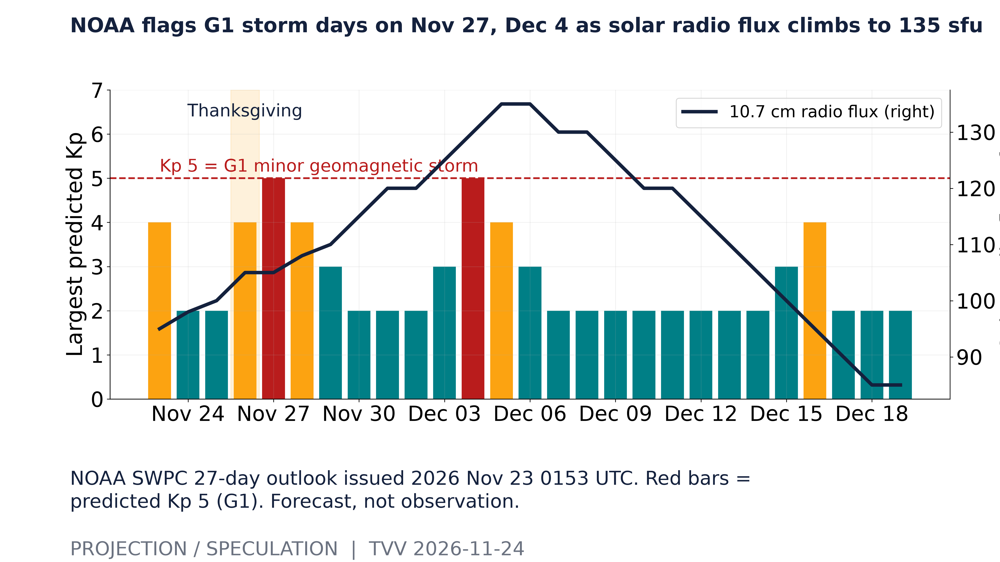
NOAA flags G1 storm days on Nov 27, Dec 4 as solar radio flux climbs to 135 sfu. NOAA SWPC 27-day outlook issued 2026 Nov 23 0153 UTC. Red bars = predicted Kp 5 (G1). Forecast, not observation. [Projection/Speculation; data as of 2026 Nov 23 0153 UTC] Source: services.swpc.noaa.gov data page
5. Critical Infrastructure / Transportation Disruptions
- ★ Who carries the AI build-out: SEC filings show Amazon owing $180.9 billion of debt at Sept 30 (from $55.1 billion a year earlier) plus $14.5 billion of finance leases and $100.3 billion of operating leases, about $296 billion in all; Oracle owes $130.1 billion of debt (from $92.9 billion) plus $43.8 billion of leases, and Alphabet's debt is 5.3 times a year ago (see graph). Data centers are now building their own natural-gas power plants (MIT Technology Review), and a Yahoo Finance analysis highlights the financing gap between five-year servers and 30-year buildings. SEC EDGAR · MIT Technology Review · Yahoo Finance
- ★ Holiday travel weather: Philadelphia forecasters warn of a powerful storm on Thanksgiving Day after a clear Tuesday (NBC10), on one of the busiest travel weeks of the year; heating-oil prices have hit new highs in Rhode Island, where customers say they are "scared" for winter (Providence Journal). NBC10 Philadelphia · Providence Journal
- Texas winter readiness: gas storage is near 470 Bcf heading into winter, a Railroad commissioner says (World Oil), while a new report says Texas needs more reliable generation for extreme weather (Texas Scorecard). World Oil · Texas Scorecard
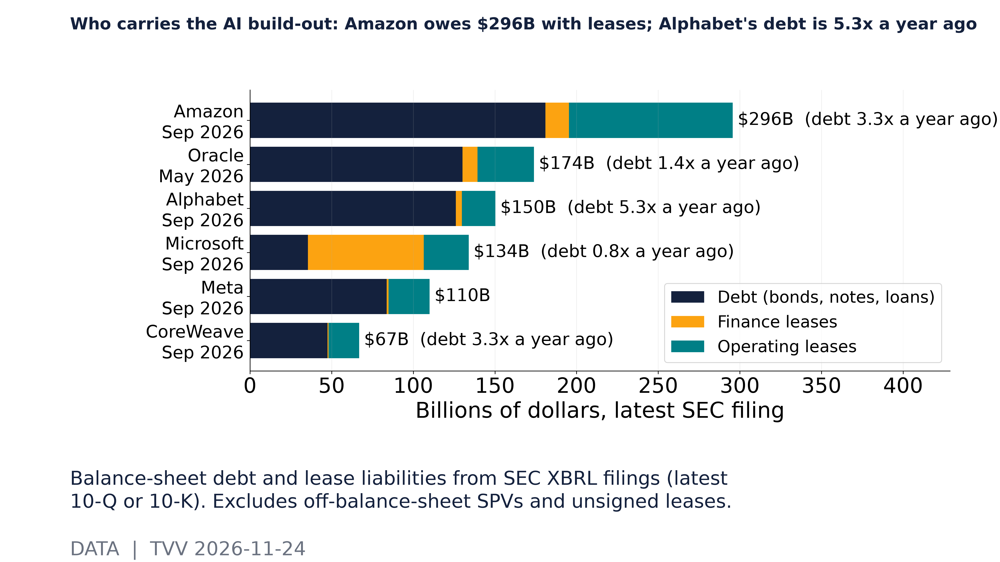
Who carries the AI build-out: Amazon owes $296B with leases; Alphabet's debt is 5.3x a year ago. Balance-sheet debt and lease liabilities from SEC XBRL filings (latest 10-Q or 10-K). Excludes off-balance-sheet SPVs and unsigned leases. [Data; data as of latest SEC filings to 2026-09-30] Source: data.sec.gov data page
6. Econo-Metrics
- ★ Inflation test Wednesday: Kalshi gives 80% odds that October core PCE rose 0.3% and 86% that it rose 0.3% or more, up from 49% on Sept 18, which would be a third straight month above the 2% pace (see graph). New York Fed President John Williams says inflation is still too high and points to higher rates over time (Reuters; CNBC), and traders price about 95% odds of a 25 bp Fed hike in December with 5% for 50 bp (Yahoo Finance). Near term, a hot print would cement the December hike. Kalshi · Reuters · Yahoo Finance
- ★ Confidence surges: the Conference Board index jumped 11.4 points to 103.3 in November, its best since January 2025, with Present Situation at 132.8 and Expectations at 83.6; the jobs plentiful-minus-hard-to-get gap rose to +12.4%. Twelve-month inflation expectations eased but stay high at 5.7% (Conference Board). Conference Board
- ★ New tariff round: the WSJ reports the US is preparing higher tariffs on China, the EU, Japan, South Korea, Vietnam, India and others over industrial subsidies, with Trade Representative Jamieson Greer's findings possible this week; the EU, Japan and Korea may face 15% or less and China, Vietnam and India higher rates, with steel, aluminum and autos likely excluded (Economic Times; Anadolu). Economic Times · Anadolu
- Shutdown politics: a shutdown deal is colliding with Democrats' divide over the Iran war (The Hill). The Hill
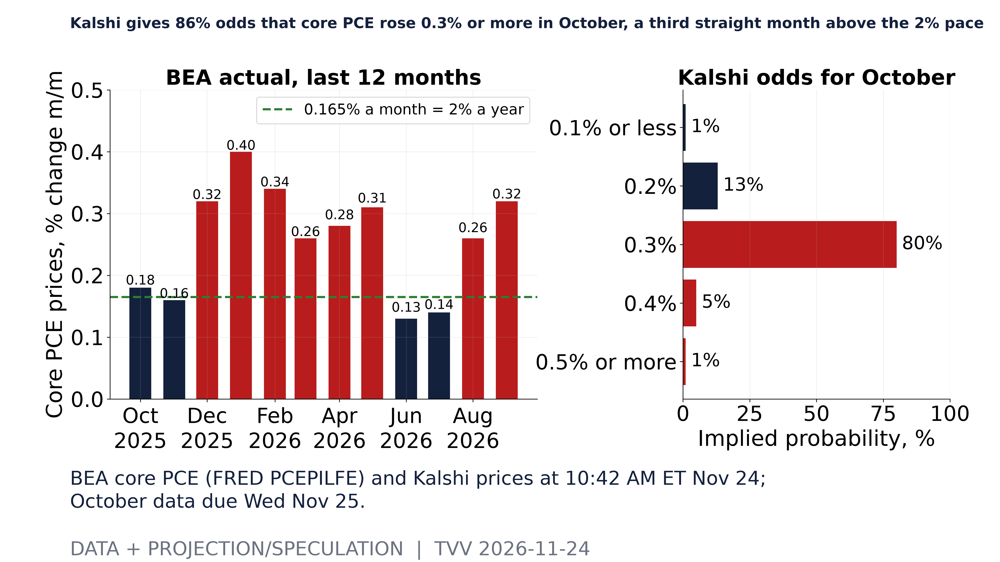
Kalshi gives 86% odds that core PCE rose 0.3% or more in October, a third straight month above the 2% pace. BEA core PCE (FRED PCEPILFE) and Kalshi prices at 10:42 AM ET Nov 24; October data due Wed Nov 25. [Data + Projection/Speculation; data as of 2026-11-24 10:42 ET] Source: kalshi.com data page
7. Epidemic / Bio-Metrics
- ★ WHO reports on the Washington bird-flu death: a Nov 24 Disease Outbreak News confirms three H5N1 infections among Yakima County dairy workers, including the first reported death after exposure to infected dairy cattle; sequences closely match the cattle virus, there is no evidence of human-to-human spread, and WHO rates general-population risk as low and occupational risk as low to moderate. CDC now counts 75 confirmed US H5 human infections since 2024, with three deaths. WHO · CDC
- ★ Bettors stay calm: Polymarket prices a new pandemic declared in 2026 at 1.5% (3.4% 60 days ago) and a new WHO COVID variant of concern before 2027 at 4.5% (14% 60 days ago), despite the bird-flu death, measles deaths and the Ebola outbreak (see graph). Near term, markets see no pandemic-scale event before year-end. Polymarket
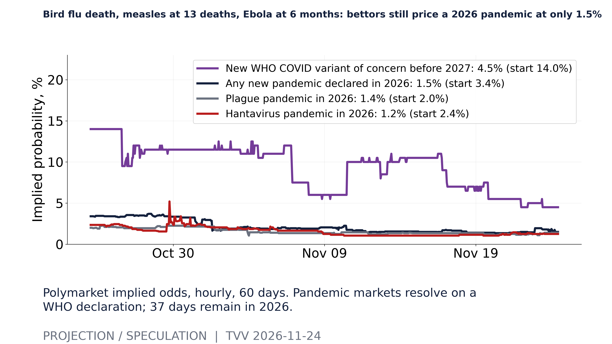
Bird flu death, measles at 13 deaths, Ebola at 6 months: bettors still price a 2026 pandemic at only 1.5%. Polymarket implied odds, hourly, 60 days. Pandemic markets resolve on a WHO declaration; 37 days remain in 2026. [Projection/Speculation; data as of 2026-11-24 10:42 ET] Source: polymarket.com data page
8. Gold and Silver and Commodities
- ★ Gold's rebound fades: gold is testing support near $3,600 after Monday's rebound as Fed hike bets weigh on silver (Kitco), with COMEX near $3,589 this morning. Polymarket now gives 61.5% odds gold trades below $3,500 by Dec 31, up from 19.5% a week ago, versus 6.6% for below $3,000 and 1.8% for above $5,000 (see graph). Near term, bettors lean toward a retest of the lows. Kitco · Polymarket
- ★ Copper follows the AI trade down: COMEX copper fell 4.5% to $5.466/lb by 10:25 AM ET as Nvidia dropped 7.4%, with a 60-day correlation of 0.48 between daily copper and Nvidia returns (see graph); copper resumed its decline as investors look past the Nvidia drama (Bloomberg), and BNP Paribas calls AI-driven copper demand "overhyped" (CNBC). Adani has signed a three-year copper supply deal with Attero (Reuters). Bloomberg · CNBC · Reuters · CME Group
- ★ Oil: reports conflict this morning, with WSJ saying prices rebounded as shipping risks persist and Reuters saying oil came off three-month lows on the Hormuz threat, while Yahoo Finance had oil about 1% lower in the session; Reuters commentary says Middle East crude exports are trending lower amid a "fake" Iran stalemate. WSJ · Reuters · Reuters
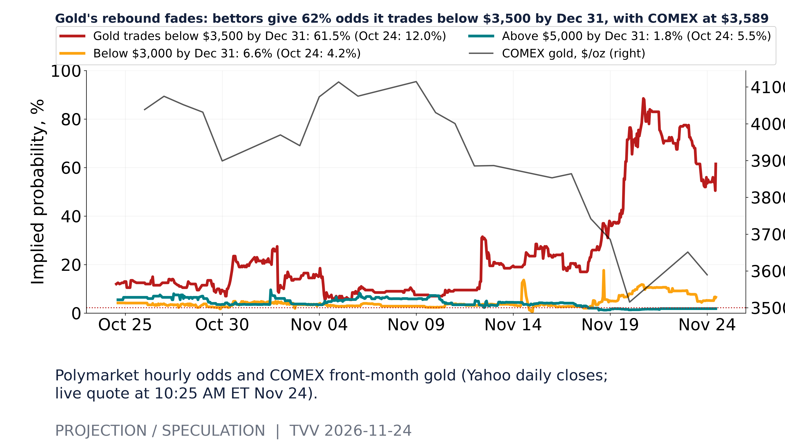
Gold's rebound fades: bettors give 62% odds it trades below $3,500 by Dec 31, with COMEX at $3,589. Polymarket hourly odds and COMEX front-month gold (Yahoo daily closes; live quote at 10:25 AM ET Nov 24). [Projection/Speculation; data as of 2026-11-24 10:42 ET] Source: polymarket.com data page
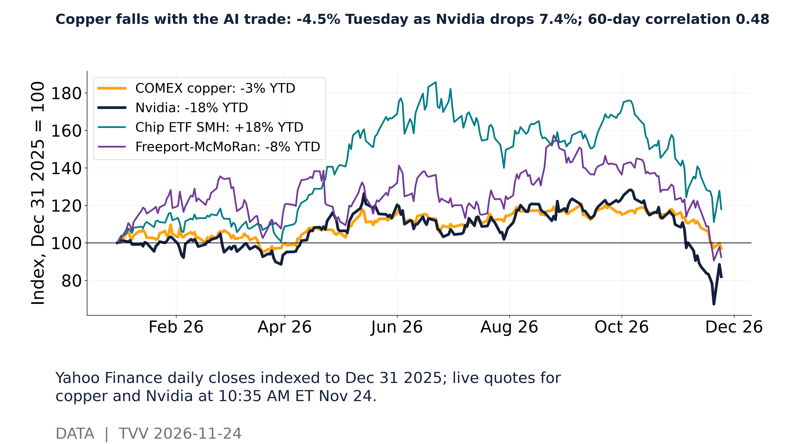
Copper falls with the AI trade: -4.5% Tuesday as Nvidia drops 7.4%; 60-day correlation 0.48. Yahoo Finance daily closes indexed to Dec 31 2025; live quotes for copper and Nvidia at 10:35 AM ET Nov 24. [Data; data as of 2026-11-24 10:35 ET] Source: finance.yahoo.com data page
9. Stock Averages and Nasdaq Major Movers
- ★ The Huang rally fades: late morning the Dow was down 0.4%, the S&P 500 down 1.2% and the Nasdaq down 1.8% after Monday's best day since April 2025 (Yahoo Finance). Nvidia fell 7.7% to $152.35 and Anthropic 9.75% to $79.08 (Guardian live); the Philadelphia semiconductor index was down 5.8% after gaining over 14% Monday, CoreWeave fell 6.9% and the S&P tech sector 2.4%, while health care and staples rose (Reuters). Nvidia has given back about 31% of Monday's +31.5% gain and CoreWeave about 58% of its +22.3% (see graph). Yahoo Finance · The Guardian · Reuters
- ★ Nasdaq's 2026 gain nearly gone: the Composite was 23,648 at 10:35 AM ET, up just 1.7% for the year from +18.7% at the Oct 6 peak; through day 328 it ranks 15th of 55 years since 1972 from the bottom (see graph). Strategists say technical measures warned of this whiplash (WSJ). Nasdaq · WSJ
- ★ Bitcoin below $60,000: US spot bitcoin ETFs saw another $570 million of outflows on Nov 23, taking November to a record of about $4.71 billion, with BlackRock's IBIT at $509 million (The Block; CoinDesk). 21Shares says the Binance hack sparked the sell-off and forced selling of leveraged longs deepened it. The Block · CoinDesk · 21Shares
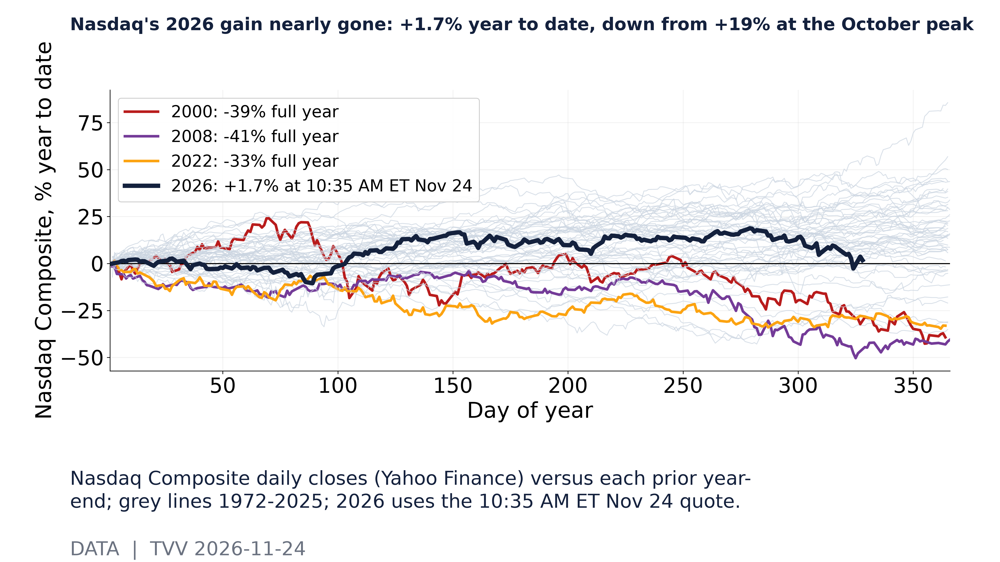
Nasdaq's 2026 gain nearly gone: +1.7% year to date, down from +19% at the October peak. Nasdaq Composite daily closes (Yahoo Finance) versus each prior year-end; grey lines 1972-2025; 2026 uses the 10:35 AM ET Nov 24 quote. [Data; data as of 2026-11-24 10:35 ET] Source: finance.yahoo.com data page
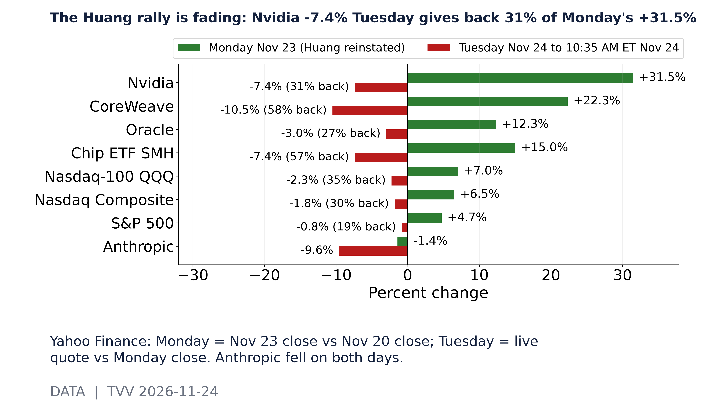
The Huang rally is fading: Nvidia -7.4% Tuesday gives back 31% of Monday's +31.5%. Yahoo Finance: Monday = Nov 23 close vs Nov 20 close; Tuesday = live quote vs Monday close. Anthropic fell on both days. [Data; data as of 2026-11-24 10:35 ET] Source: finance.yahoo.com data page
10. Polymarket and Kalshi Sentiment Highlights
- ★ Growth odds before Wednesday's GDP revision: Kalshi's Q4 2026 real GDP curve centers near 2.8%, with 85% odds above 2% and 39% above 3%, after Q3's 3.4% advance estimate; odds above 0% are 94%, little changed from 95% 30 days ago (see graph). Near term, bettors see no recession signal in Q4. Kalshi · BEA
- ★ Nvidia price ladder: Polymarket's November contract had Nvidia touching $152 at 99.5%, $144 at 55.5% and $168 at 25.5% this morning, as the stock traded near $152 (Polymarket). Near term, bettors give better-than-even odds of a further slide to $144 before month-end. Polymarket
- Iran oil endgame odds: Polymarket prices Iran charging Hormuz transit fees by Dec 31 at 7.5% (16% 30 days ago) and an outright war declaration at 1.8% (see graph in section 1). Polymarket
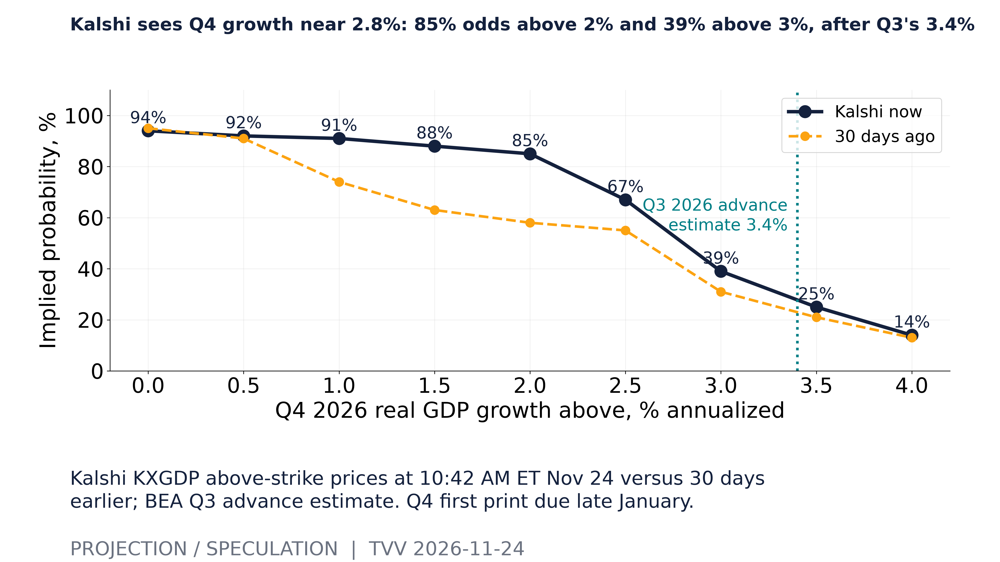
Kalshi sees Q4 growth near 2.8%: 85% odds above 2% and 39% above 3%, after Q3's 3.4%. Kalshi KXGDP above-strike prices at 10:42 AM ET Nov 24 versus 30 days earlier; BEA Q3 advance estimate. Q4 first print due late January. [Projection/Speculation; data as of 2026-11-24 10:42 ET] Source: kalshi.com data page
11. Tech-Metrics
- ★ Anthropic breaks its IPO price: shares fell below the $83 IPO price on day 4, trading at $79.23 at 10:35 AM ET (-9.6% today, -4.5% versus $83) after a +17.1% first-day close; among 11 mega-IPOs only Facebook (-16% on day 4) and Uber were weaker at this point (see graph). Polymarket gives 87.5% odds Anthropic closes below $83 by Nov 25, up from a 22.5% low (see graph). Forbes reports Dario and Daniela Amodei sold $561 million of stock in the IPO. Reuters · Forbes · Polymarket
- ★ Huang backlash: Nvidia's shares are under pressure amid criticism of Jensen Huang's reinstatement from both Republicans and Democrats (Guardian; New York Times), Huang has broken his silence (WSJ), and the Washington Post says the Trump intervention rewrites the rules of American business. Taiwan's chip sector calls Huang "irreplaceable" (South China Morning Post). The Nvidia 10-Q for the quarter ended Oct 25 is due by Dec 4. The Guardian · New York Times · WSJ · Washington Post · South China Morning Post
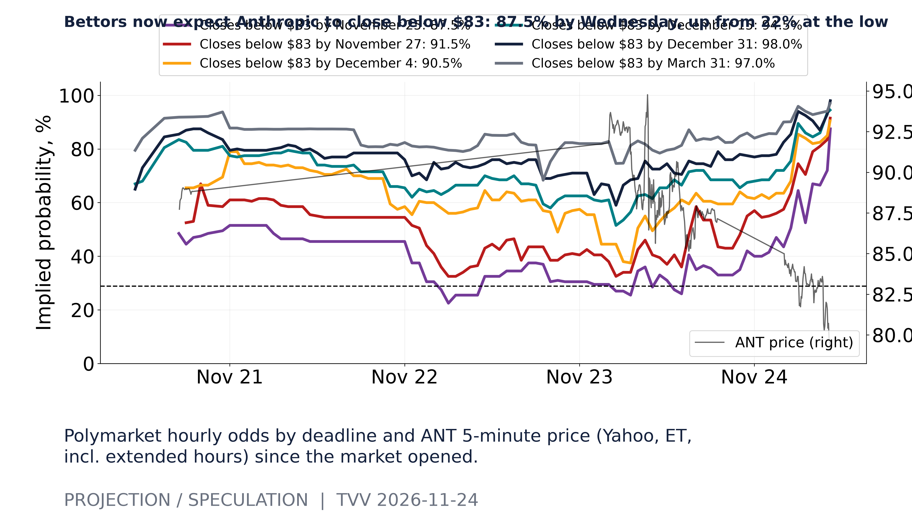
Bettors now expect Anthropic to close below $83: 87.5% by Wednesday, up from 22% at the low. Polymarket hourly odds by deadline and ANT 5-minute price (Yahoo, ET, incl. extended hours) since the market opened. [Projection/Speculation; data as of 2026-11-24 10:42 ET] Source: polymarket.com data page
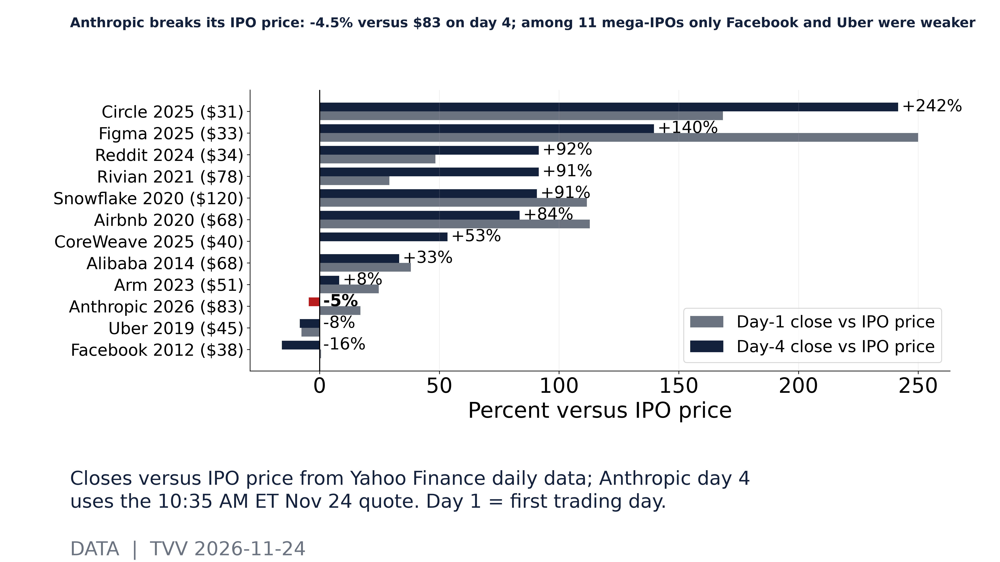
Anthropic breaks its IPO price: -4.5% versus $83 on day 4; among 11 mega-IPOs only Facebook and Uber were weaker. Closes versus IPO price from Yahoo Finance daily data; Anthropic day 4 uses the 10:35 AM ET Nov 24 quote. Day 1 = first trading day. [Data; data as of 2026-11-24 10:35 ET] Source: finance.yahoo.com data page
12. AI Hypergrowth Risks
- ★ AI penetration versus jobs: the Census Bureau's latest two-week Business Trends survey finds 25.0% of US businesses used AI in a business function and 27.6% had employees using generative AI for work, yet only 2.4% say AI cut headcount while 7.3% say it added jobs (see graph). US Census Bureau
- ★ AI layoffs and the rehiring bill: Allstate is reported to be cutting about 5,000 jobs, up to 10% of its roughly 53,000 staff, across claims, underwriting, service, legal, HR, IT and sales in an AI-driven restructuring, and has not confirmed the number (Crain's Chicago Business). Companies are learning the cost of rehiring after AI-driven layoffs (International Business Times), and Raconteur calls AI layoffs a bet that could backfire. Crain's Chicago Business · International Business Times · Raconteur
- ★ Concentration risk: Mamdani says the Nvidia drama shows the stock market is overly dependent on AI (The Guardian), and Barron's argues the Nvidia rally can't hide the market's AI problems. The Guardian · Barron's
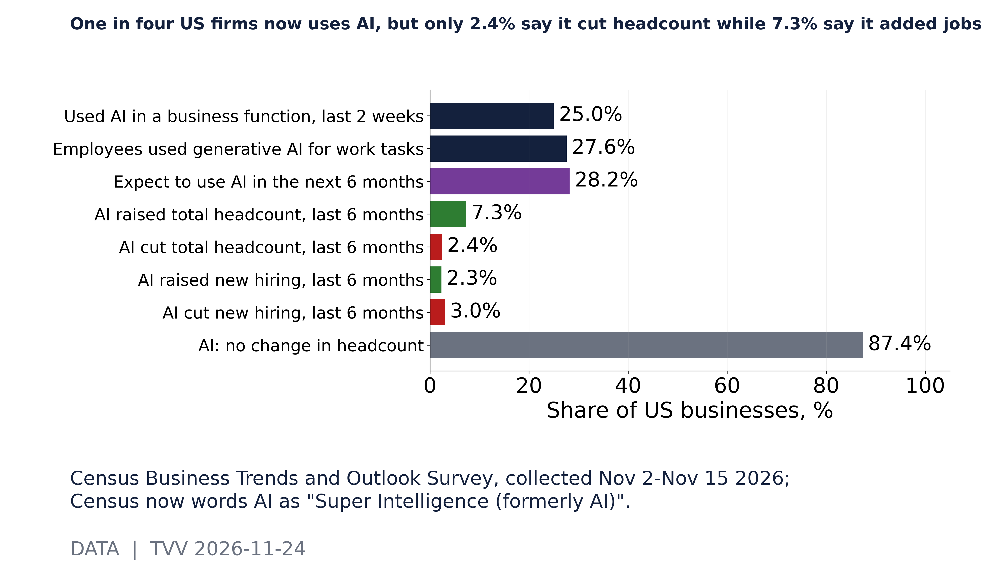
One in four US firms now uses AI, but only 2.4% say it cut headcount while 7.3% say it added jobs. Census Business Trends and Outlook Survey, collected Nov 2-Nov 15 2026; Census now words AI as "Super Intelligence (formerly AI)". [Data; data as of 2026-11-15] Source: census.gov data page
13. Finance Bubble Derivatives Risk
- ★ Leverage near a record: FINRA margin debt was $1.448 trillion in October, up 22.4% in a year and just below June's record $1.502 trillion; past peaks in annual growth were +80% in 1999-2000, +63% in 2007 and +72% in 2021 (FINRA; see graph). FINRA
- ★ Oracle's AI debt priced near junk: in its $10 billion November bond sale, Oracle's 20-year note yields 8.67%, above the 8.12% ICE BofA high-yield index, while its 2029 notes priced at 7.06% (Treasury +240 bp) and 2031 notes at 7.46% (+275 bp) (see graph). Oracle SEC filings · FRED
- ★ Data-center credit strain: ING's auction of 12 data-center loans totaling about $500 million fizzled for lack of demand, leaving the bank to shop them to individual buyers; bids on a $25 million piece tied to Project Jupiter were too low (Bisnow). KBRA revised Goldman Sachs BDC's outlook to negative (ABF Journal), and Goldman Sachs Private Credit Corp offered to repurchase up to 19.26 million shares (SEC filing via TradingView). Bisnow · ABF Journal · TradingView
- Private-credit scrutiny: the Financial Times profiles the small ratings agency behind the private-credit boom, and EY explains why private credit is drawing regulatory scrutiny. Financial Times · EY
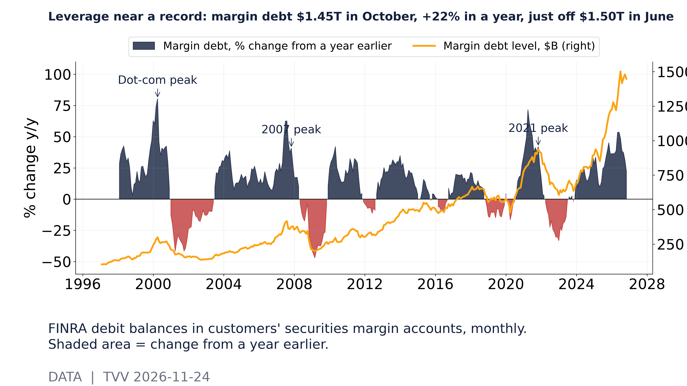
Leverage near a record: margin debt $1.45T in October, +22% in a year, just off $1.50T in June. FINRA debit balances in customers' securities margin accounts, monthly. Shaded area = change from a year earlier. [Data; data as of 2026-10] Source: finra.org data page
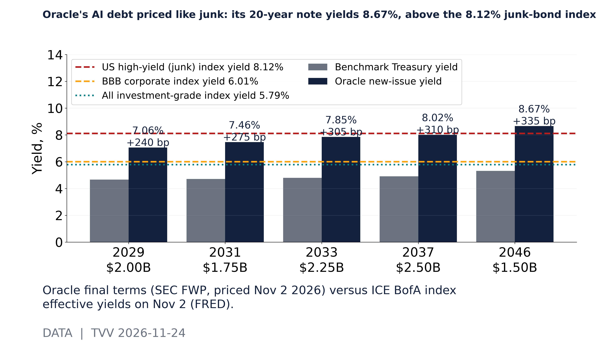
Oracle's AI debt priced like junk: its 20-year note yields 8.67%, above the 8.12% junk-bond index. Oracle final terms (SEC FWP, priced Nov 2 2026) versus ICE BofA index effective yields on Nov 2 (FRED). [Data; data as of 2026-11-02] Source: sec.gov data page
Prioritized Risk Summary November 24, 2026
| Sections Ranked for Importance Today | |
|---|---|
| STOCKS | Huang rally fades: Nvidia -7.7%, Nasdaq -1.8% and its 2026 gain down to 1.7% |
| TECHNOLOGY | Anthropic falls below its $83 IPO price on day 4; bettors see 87.5% close below |
| DERIVATIVES | Margin debt $1.45T, +22% in a year; ING's $500M data-center loan auction fizzles |
| INFRASTRUCT | Amazon carries $296B of debt and leases for the AI build-out; Thanksgiving storm |
| ECONOMY | Kalshi sees 86% odds of hot core PCE Wednesday; 95% odds of a December Fed hike |
| PREDICTIONS | Kalshi sees Q4 growth near 2.8% before Wednesday's GDP revision |
| GEOPOLITICS | Iran claims mines hit 3 escorted tankers; UKMTO logs projectiles; Russia warns Estonia |
| TERROR | FSB says it foiled a synagogue bomb plot; ransomware on pace for a record month |
| COMMODITY | Copper -4.5% with the AI trade; bettors give 61.5% odds gold falls below $3,500 |
| AI BOOST | One in four US firms uses AI; Allstate reported cutting 5,000 jobs in AI push |
| HEALTH | WHO confirms first H5N1 death from dairy cattle exposure; no human-to-human spread |
| SPACE | NOAA flags G1 storm days on Nov 27 and Dec 4; solar wind calm today |
| QUAKES | No deadly M6+ quake; five M6+ in seven days, led by M6.8 Timor-Leste |
TECHVESTVENTURES ACTION-ALERT — November 24, 2026 see all graphs click TVV Risk Center
EDITOR — Michael Hentschel
Most news events require or spawn no action or reaction, some (but not many) are or become warnings. We draw attention to substantial lifestyle risks and market risks in particular, some created by Mid-Term Vote anxieties, Middle East tensions, vast over-indebtedness globally, and other events we track. Longer term but capable of causing sudden power surges as serious as the Carrington Event. Climate instability occasioned by long-term cyclical solar electro-magnetic flares, is becoming much more prominent and even more likely. New AI predictive analytics and pattern seekers are pointed in some of these directions, and we monitor imminent likelihood. Some readers might hedge and others might see opportunity. The above is not investment advice.